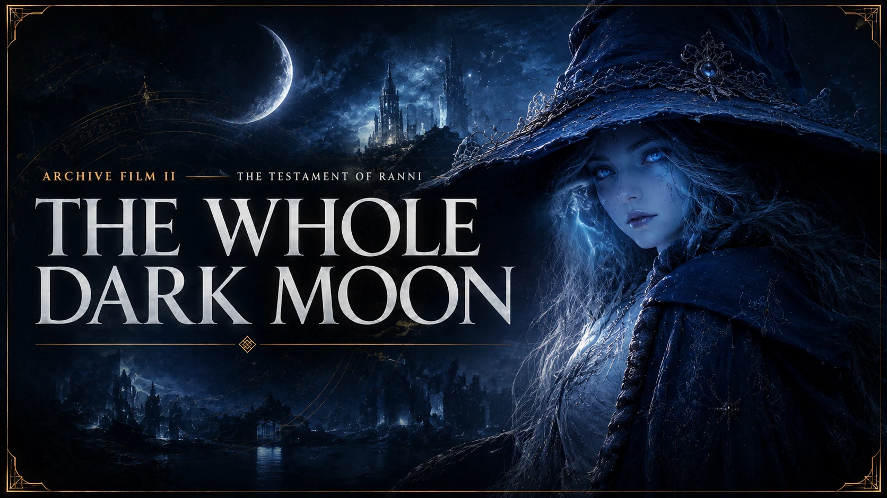
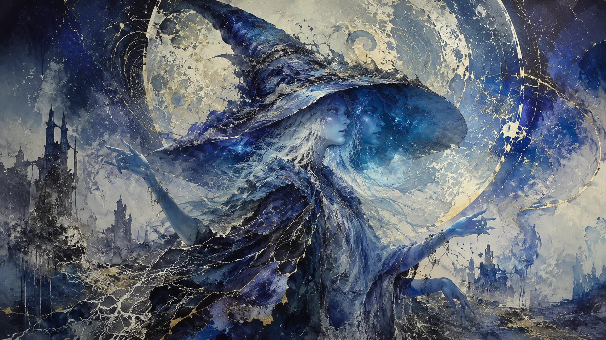
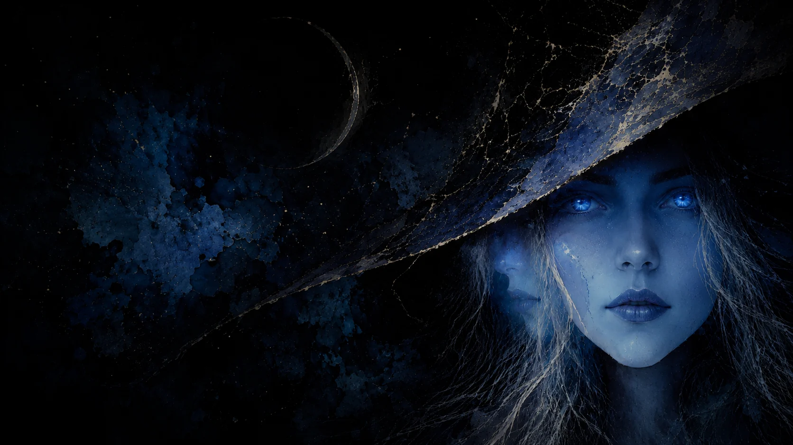

Film II · In productionA truth told once,
whole.
“I slew mine own flesh because the heavens mistook it for a leash.”
From a house beneath two moons to the long dark beyond the Order, Ranni takes possession of the history written around her—and tells it in her order, no other.

is not abandonment.
It is the only fidelity I had left to invent—the love that proves itself by never closing its hand.
The whole testament
Twenty movements orbit the crime at the center: a stolen rune, two half-deaths, and the long road from an appointed fate to a chosen one.
Consulting the dark moon…

No leash.
No throne.
Not alone.
The rest is distance—and distance, at last, is ours.
Read the coda →Return beneath another sky.
The Archive keeps the testimony, the road, and the tools to build the Tarnished who followed her past the warning.
Gold and Shadow, KINDLING, and The Testament of Ranni—more than 100,000 words.
Enter the Tales → JourneyWalk the Age of StarsFollow Ranni's complete quest, its fragile handoffs, and the ending it unlocks.
Open the Tarnished Path → BuildForge the consortWeapons, sorceries, armor, exact combat events, and a build worthy of the cold dark.
Enter the Full Build Lab →